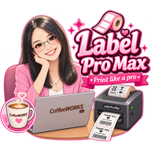

คู่มือติดตั้งและใช้งาน · v0.5.0 · 7 ตุลาคม 2569

Label Pro Max Local
ระบบพิมพ์ฉลากภาษาไทย 100 × 150 มม. ของแต่ละเครื่อง ค้นหาลูกค้าและพิมพ์ได้โดยไม่ใช้อินเทอร์เน็ตหลังเตรียมระบบครั้งแรก
เตรียมก่อนติดตั้ง
- Windows 64 บิต และบัญชีพนักงานที่จะใช้โปรแกรม
- อินเทอร์เน็ตสำหรับติดตั้งครั้งแรกและอัปเดต
- Google Chrome, Git for Windows และไดรเวอร์เครื่องพิมพ์
- เครื่องพิมพ์พร้อมกระดาษฉลาก 100 × 150 มม.
- โฟลเดอร์ที่เขียนไฟล์ได้ ไม่อยู่ใน Program Files หรือใน ZIP
รุ่น v0.5.0 เผยแพร่บน main ติดตั้งด้วย Git เพื่อใช้ปุ่มอัปเดตได้ ไม่ต้องติดตั้ง Node.js เอง ตัวเปิดเตรียมเครื่องมือให้ครั้งแรกโดยไม่เปิดหน้าต่าง Terminal ค้าง
ลำดับเริ่มต้น
ติดตั้งโปรแกรมพื้นฐาน → clone โปรเจค → เปิดตัวเปิด → ตั้งผู้ส่งและเครื่องพิมพ์ → นำเข้าลูกค้า → ทดลองฉลากหนึ่งใบ
1. ติดตั้งตั้งแต่เริ่มต้น
- ติดตั้ง Chrome จาก google.com/chrome
- ติดตั้ง Git for Windows จาก git-scm.com/install/windows แล้วปิดและเปิด PowerShell ใหม่
- ติดตั้งไดรเวอร์เครื่องพิมพ์ ต่อ USB ตั้งกระดาษ 100 × 150 มม. และปรับตรวจจับฉลากตามคู่มือผู้ผลิต
- สร้างโฟลเดอร์
C:\LabelProMaxLocal แล้วเปิด PowerShell ในโฟลเดอร์นั้น - คัดลอกเฉพาะคำสั่งบรรทัดด้านล่างแล้ววาง ไม่รวมข้อความรอบคำสั่ง
git clone https://github.com/MrkTHixi/label-pro-max-local.git
หาก GitHub ขอเข้าสู่ระบบ ต้องใช้บัญชีที่มีสิทธิ์อ่านโปรเจค คำสั่งนี้ได้ main และสร้างโฟลเดอร์ label-pro-max-local ให้เอง
- เปิดโฟลเดอร์
C:\LabelProMaxLocal\label-pro-max-local - ดับเบิลคลิก start-label-pro-max-local.vbs รอจนเตรียมระบบเสร็จ อย่าเปิดซ้ำหลายครั้งระหว่างดาวน์โหลด
- Chrome เปิดหน้าแอป พร้อมสร้างทางลัด Label Pro Max Local บน Desktop และตั้งบริการให้เริ่มพร้อม Windows
ถ้าติดตั้งจาก ZIP
ดาวน์โหลด Code → Download ZIP จาก หน้า main แตกไฟล์ทั้งหมดแล้วเปิดตัวเปิดเช่นเดียวกัน แต่ปุ่มอัปเดต Git ใช้ไม่ได้ แนะนำ clone สำหรับใช้งานประจำ
data/ สร้างเมื่อเริ่มระบบ backups/ สร้างเมื่อสำรองครั้งแรก ข้อมูลเฉพาะเครื่องไม่อยู่ใน repo โค้ด
2. ตั้งค่าครั้งแรก
- ไป ตั้งค่า กรอกชื่อ เบอร์โทร ที่อยู่ และที่อยู่เพิ่มเติมของผู้ส่ง แล้วกดบันทึกข้อมูลผู้ส่ง
- ตั้งชื่อสาขาเพื่อแสดงในหัวโปรแกรม
- เลือกชื่อเครื่องพิมพ์ให้ตรงรายการ Windows แล้วกดบันทึก ไม่จำเป็นต้องใช้ชื่อ TP518G เหมือนเครื่องต้นทาง
- ตรวจสถานะระบบพิมพ์พร้อม ถ้าเป็นโหมดทดลองจะไม่มีการพิมพ์ลงกระดาษจริง
- ทดลองฉลากหนึ่งใบ ตรวจภาษาไทย ขนาด และตำแหน่งก่อนใช้จริง
ทางลัดและตำแหน่งข้อมูล
ใช้ทางลัด Desktop เปิดประจำวันได้เลยโดยไม่ต้องเปิด Terminal หน้า ตั้งค่า แสดงโฟลเดอร์ระบบและฐานข้อมูลที่กำลังใช้งาน
localhost:3000 เป็นระบบชุดที่กำลังเปิดอยู่ การ clone อีกโฟลเดอร์ไม่ได้เปลี่ยนระบบที่เปิดแล้ว หากทดสอบสำเนา ให้ปิดระบบชุดเดิมก่อนแล้วเปิดตัวเปิดจากโฟลเดอร์สำเนาโดยตรง ทางลัดจะเปลี่ยนไปยังโฟลเดอร์ที่เปิดสำเร็จ
ตั้งปลายทางสำรอง Git (ไม่บังคับ)
คัดลอก URL นี้ลงช่อง Git repo สำหรับ backup แล้วกดบันทึก:
https://github.com/MrkTHixi/label-pro-max-local-backups.git
การส่งสำรองต้องมีสิทธิ์เขียน repository สำรองบนเครื่องนั้น กรอก URL อย่างเดียวไม่ดาวน์โหลดลูกค้ากลับมา ชื่อสาขาไม่ได้แยกโปรไฟล์สำรอง หากใช้คนละสาขาแยกกัน ควรใช้ repository สำรองคนละอัน
หาก SSH ไม่มีสิทธิ์ ใช้วิธีส่งไฟล์ .db ในหน้า 5 ได้โดยไม่ต้องล็อกอิน GitHub
3. ลูกค้า พิมพ์ และคิวงาน
เพิ่มและนำเข้าลูกค้า
ไป ลูกค้า → เพิ่มลูกค้า หรือ นำเข้า Excel ใช้ชีต PrintLabel และคอลัมน์ A–D ตามตาราง ตรวจข้อมูลซ้ำก่อนนำเข้าอีกครั้ง
| คอลัมน์ | ข้อมูล |
|---|
| A | ชื่อย่อที่ใช้ค้นหา ไม่พิมพ์บนฉลาก |
| B | ชื่อร้าน / สถานที่ / ผู้รับ ที่พิมพ์บนฉลาก |
| C | ที่อยู่และรหัสไปรษณีย์ |
| D | ข้อมูลติดต่อและเบอร์โทร |
พิมพ์ฉลาก
- ค้นหาด้วยชื่อย่อ ชื่อผู้รับ หรือข้อมูลติดต่อ
- กดดาวเพื่อติดไว้เหนือช่องค้นหา รายการติดดาวแสดงชื่อย่อ A
- ดับเบิลคลิกชื่อหรือกดรูปเครื่องพิมพ์เพื่อเปิดตัวเลือก
- เลือกข้อความ จำนวน 1–20 ใบ และผู้สั่ง ตรวจตัวอย่างก่อนยืนยัน
- งานเข้าคิวให้ตัวพิมพ์ส่งทีละงาน ตรวจว่ากระดาษออกจริงก่อนพิมพ์ซ้ำ
จัดการคิว
ยอดรวมจำนวนใบคำนวณจากงานที่ส่งพิมพ์สำเร็จ เลือกงานล้มเหลวหรือยกเลิกทีละรายการ หรือเลือกทั้งหมด แล้วกดล้างงานที่เลือกและยืนยัน งานสำเร็จและยอดรวมยังอยู่
สถานะส่งงานพิมพ์แล้วหมายถึงโปรแกรมส่งงานสำเร็จ ต้องตรวจฉลากจริง หากชื่อเครื่องพิมพ์ผิดหรือ offline ให้แก้ก่อนพิมพ์ซ้ำ
4. ส่งลูกค้าให้อีกเครื่อง
วิธีสำหรับพนักงาน ไม่ใช้ GitHub หรือ SSH
- เครื่องต้นทาง: ตั้งค่า → ดาวน์โหลดไฟล์สำรองเพื่อย้ายเครื่อง (.db)
- ส่งไฟล์ .db ที่ดาวน์โหลดผ่าน USB หรือช่องทางส่งไฟล์ของร้าน
- เครื่องปลายทาง: ตั้งค่า → นำรายชื่อลูกค้าจากไฟล์สำรอง
- เลือกไฟล์ .db อ่านคำเตือนและยืนยัน ระบบสำรองข้อมูลเดิมก่อนแทนที่ แล้วโหลดหน้าใหม่
รายชื่อลูกค้าและดาวจะตามไฟล์มา ผู้ส่ง การตั้งค่า และประวัติพิมพ์ของเครื่องปลายทางยังอยู่ รองรับ .db ไม่เกิน 10 MB ต้องไม่มีงานรอหรือกำลังพิมพ์ การวางไฟล์ลงใน backups อย่างเดียวไม่กู้ข้อมูล
สำรองก่อนอัปเดต
ตั้งค่า → สำรองข้อมูลตอนนี้ รอผลสำรองรอบล่าสุด ไฟล์อยู่ใน backups หาก Git ส่งไม่สำเร็จ ยังมีไฟล์สำรองในเครื่อง ให้เก็บสำเนานอกเครื่องด้วย
กู้คืนเต็มระบบโดยผู้ดูแล
หากต้องการย้ายทั้งลูกค้า ผู้ส่ง การตั้งค่า และประวัติ ให้ปิดระบบปลายทางก่อน ผู้ดูแลเปิด PowerShell ในโฟลเดอร์โปรเจคและใช้คำสั่งนี้ เปลี่ยนพาธให้ตรงไฟล์จริง:
npm run restore -- "C:\Transfer\backup.db"
รองรับ .db และ .sql.gz ไม่ใช่การรวมสองชุดเข้าด้วยกัน ระบบเก็บสำรองก่อนแทนที่ หลังเปิดใหม่ให้ตรวจชื่อเครื่องพิมพ์และปลายทางสำรอง หากเครื่องใช้ Node แบบ portable ให้ผู้ดูแลเรียก node.exe ใน .runtime ตามตำแหน่งที่ติดตั้ง
5. อัปเดตและปิดระบบ
อัปเดตจาก main
- สำรองข้อมูลและตรวจผลสำรองก่อนอัปเดต
- รอให้คิวรอพิมพ์และกำลังพิมพ์หมด รวมถึงจบการนำเข้าลูกค้า
- ตั้งค่า → อัปเดตแอปจาก GitHub → ยืนยัน
- หน้าจอแสดงกำลังดาวน์โหลด/ติดตั้ง/เริ่มระบบใหม่ รอจนระบบพร้อม หน้าจะโหลดใหม่เองและแจ้งอัปเดตสำเร็จ
- ตรวจเวอร์ชันบนปุ่มตั้งค่าและข้อมูลก่อนใช้งานต่อ
ต้องติดตั้งด้วย Git และมีอินเทอร์เน็ต ตัวอัปเดตติดตาม branch ของเครื่อง ไม่สลับ branch เอง เครื่องที่ติดตามสาขาเก่าให้ผู้ดูแลเปลี่ยนมาที่ main
ถ้ามีไฟล์โค้ดแก้ไขหรือลบค้าง ตัวอัปเดตจะหยุดเพื่อไม่ทับงาน ให้ผู้ดูแลตรวจไฟล์ก่อน ไม่ลบ data/ หรือ backups/ เพื่อแก้ปัญหา
ปิดระบบและแอป
- ตั้งค่า → ปิดระบบ → ยืนยัน
- รอให้งานที่กำลังส่งพิมพ์เสร็จ ระบบจะหยุดแล้วสั่งปิดหน้าต่างแอป
- หาก Chrome ห้ามปิดอัตโนมัติ หน้าจอจะแจ้งปิดระบบแล้ว ให้ปิดหน้าต่างเอง
- เปิดครั้งถัดไปด้วยทางลัด Desktop
ปิดแท็บ Chrome อย่างเดียวไม่ได้หยุดบริการเบื้องหลัง หากใช้คอมต่อแต่ไม่พิมพ์ สามารถปล่อยบริการทำงานไว้ได้
6. แก้ปัญหาและดูแลข้อมูล
| อาการ | ตรวจหรือแก้ไข |
|---|
| ไฟล์เกิดในอีกโฟลเดอร์ | ตรวจโฟลเดอร์ระบบในตั้งค่า ปิดชุดเดิมก่อนเปิดตัวเปิดจากสำเนาที่ต้องการ |
| วาง backup แล้วลูกค้าไม่มา | ใช้ปุ่มนำรายชื่อลูกค้าจากไฟล์สำรอง ไม่ใช่แค่คัดลอกลงโฟลเดอร์ |
| ส่ง Git backup ไม่ได้ | ตรวจสิทธิ์ repo สำรอง key ของ repo โค้ดอาจอ่าน/เขียน repo สำรองไม่ได้ ใช้ไฟล์ .db ส่งแทนได้ |
| อัปเดตแจ้งไฟล์แก้ไขค้าง | ให้ผู้ดูแลตรวจ Git status และจัดการเฉพาะไฟล์โค้ด อย่าล้างข้อมูลเพื่อแก้ปัญหา |
| เครื่องพิมพ์ไม่ออก | ตรวจ USB กระดาษ offline และชื่อในตั้งค่า ก่อนพิมพ์ซ้ำ |
| ฉลากผิดขนาด | ตั้งไดรเวอร์ 100 × 150 mm และปรับตรวจจับฉลาก ทดลองหนึ่งใบ |
| เปิดครั้งแรกนาน | เชื่อมอินเทอร์เน็ตและรอเครื่องมือดาวน์โหลด ไม่เปิดซ้ำหลายครั้ง |
| ปิดระบบแล้วหน้าต่างยังอยู่ | Chrome อาจห้ามปิดหน้าต่างที่เปิดเอง ปิดหน้าต่างได้หลังข้อความปิดระบบแล้ว |
ไฟล์ที่ควรเก็บ
- data/ ฐานข้อมูลลูกค้า ผู้ส่ง การตั้งค่า และประวัติพิมพ์
- backups/ ไฟล์สำรองก่อนล้าง ก่อนนำเข้า และสำรองทั่วไป
- data-backup/ ประวัติ Git สำรองที่แยกจากโค้ด
การล้างรายชื่อลูกค้าไม่ลบสำรองและประวัติพิมพ์ ห้ามแชร์ไฟล์สำรองเป็นสาธารณะโดยไม่ได้ตั้งใจ เพราะมีข้อมูลลูกค้าและที่อยู่